Contagem automática
Use movimento, rotação, detecção automática ou a câmera frontal para contar os exercícios compatíveis durante o treino.
O RepChime combina um timer preciso de intervalos com a contagem automática de repetições. Configure a sessão, comece a se movimentar e deixe o iPhone manter o ritmo.
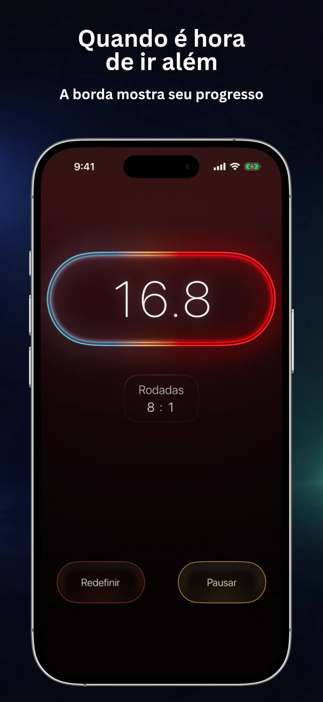
O RepChime mantém a estrutura do treino visível e os controles simples, seja para treinar por tempo ou por meta de repetições.
Use movimento, rotação, detecção automática ou a câmera frontal para contar os exercícios compatíveis durante o treino.
Defina Exercício, Descanso, Preparação e rodadas para circuitos curtos, isometrias ou sessões de intervalos.
Aumente ou reduza o tempo e as metas de repetições a cada rodada para criar sessões progressivas e estruturadas.
Mantenha o foco fora da tela com sons de contagem, avisos de rodada e orientação falada opcional do RepChime Pro.
Salve configurações do Timer e do Contador, edite seus treinos favoritos e comece em poucos toques.
Quando você retorna, o RepChime Pro recalcula a fase cronometrada com base no tempo decorrido. As notificações agendadas do iOS podem avisar sobre mudanças de fase; o app não fica em execução contínua em segundo plano.
Números grandes, fases claras e uma interface escura facilitam a leitura entre as séries e a distância.
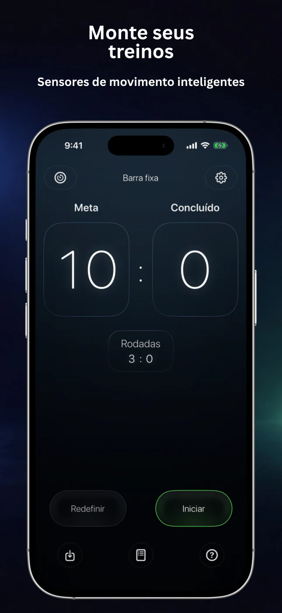
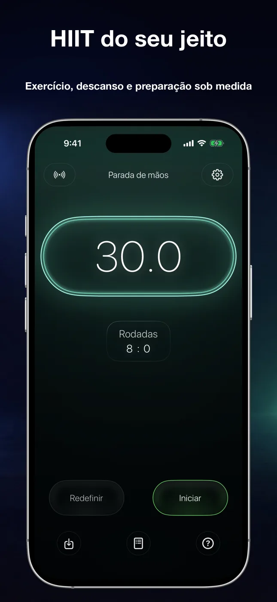
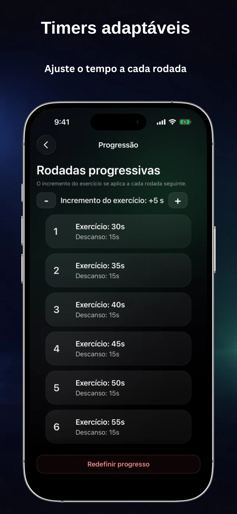
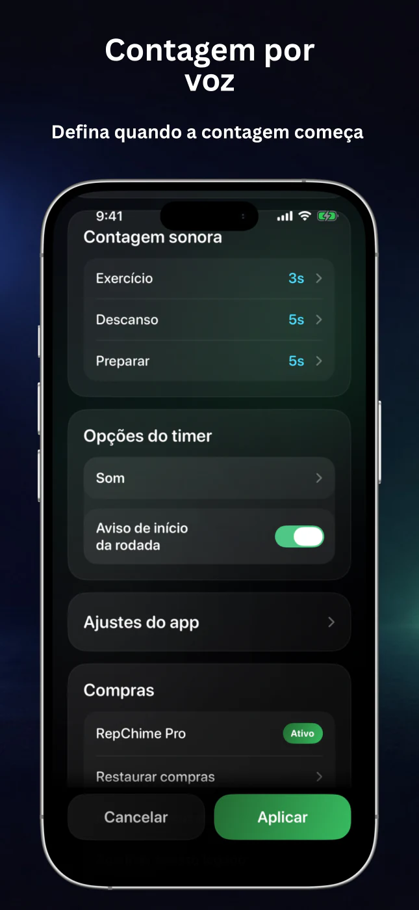
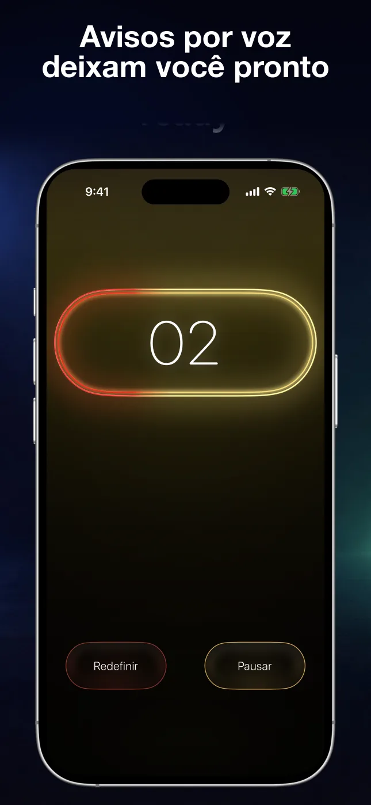
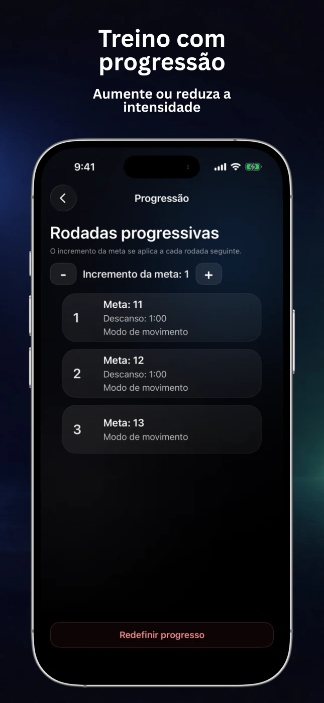
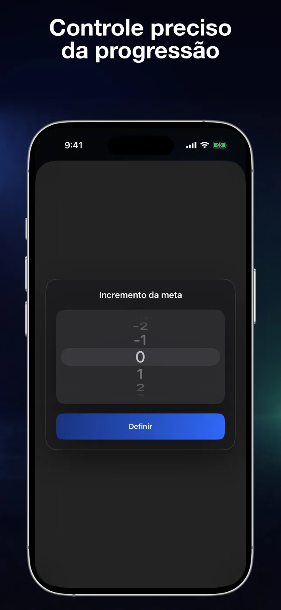
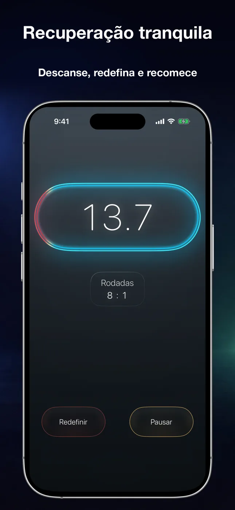
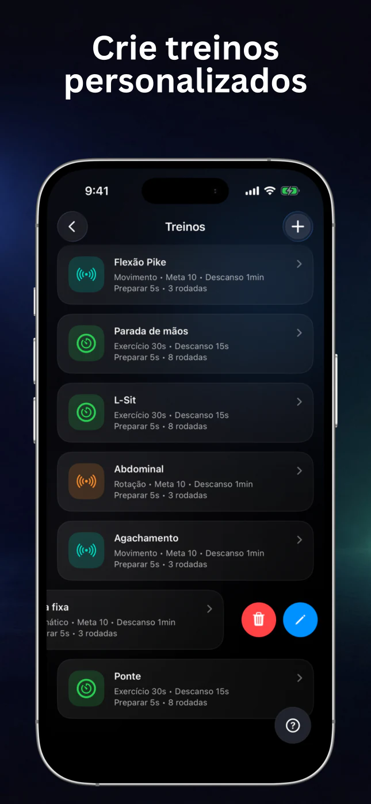
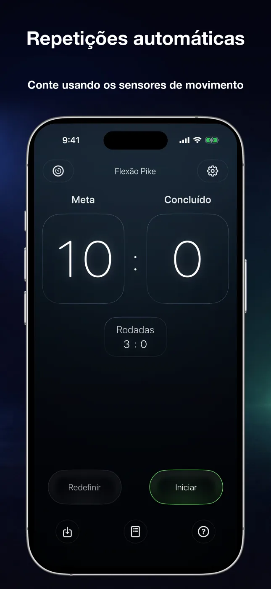
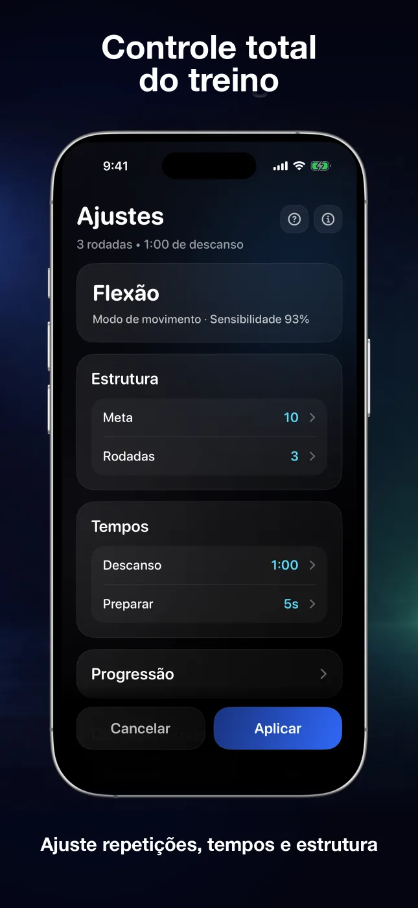
Os dois modos usam o mesmo fluxo simples: configure uma sessão, toque em Iniciar e acompanhe o ritmo visual e sonoro.
Crie sessões HIIT, de mobilidade ou isometria com tempos separados para Exercício, Descanso e Preparação. Adicione rodadas, contagens sonoras e progressão de tempo.
Defina uma meta e escolha detecção por movimento, rotação, automática ou câmera frontal. O RepChime é compatível com flexões, abdominais, barra fixa e agachamentos.
O RepChime mantém os intervalos e as repetições visíveis durante o treino. Este Short mostra um treino real de calistenia usando o app.
Workout With My Bro · RepChimeO RepChime é um app de treino para iPhone com um timer HIIT configurável e um contador que acompanha repetições compatíveis usando os sensores ou a câmera frontal.
A página atual na App Store menciona flexões, abdominais, barra fixa e agachamentos. Os modos de detecção variam conforme o exercício; a contagem pela câmera frontal está disponível para flexões.
Sim. Você pode salvar treinos do Timer e do Contador. O RepChime Pro adiciona mais espaços e o fluxo completo de edição.
Não. Os treinos e ajustes foram criados para permanecer no dispositivo. A Apple gerencia as compras e o status do acesso.
Configure o treino uma vez. Deixe o RepChime cuidar do tempo, da contagem e dos avisos enquanto você se concentra no movimento.
Baixar o RepChime grátis